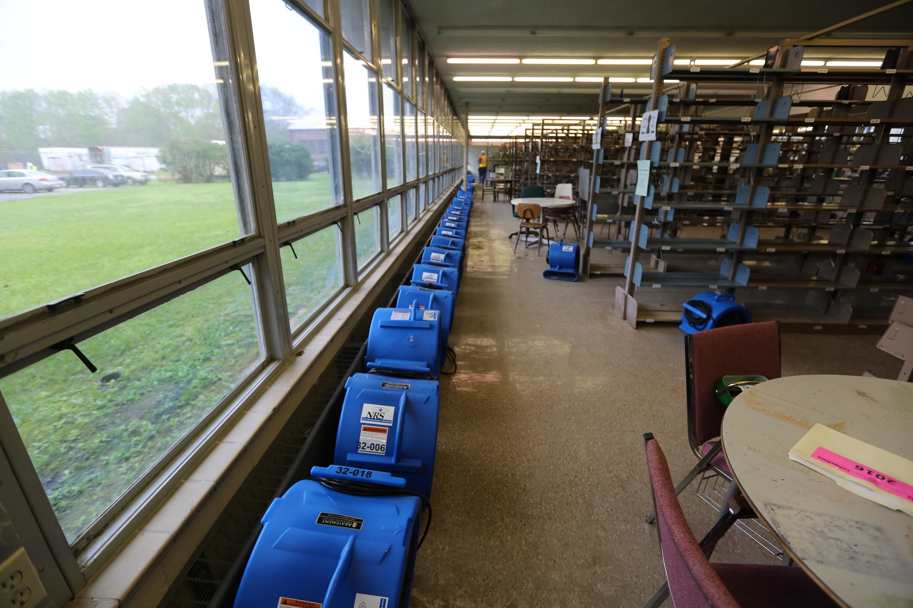

NorthStarWe Bring Answers.
NorthStarWe Bring Answers.EducationIndustry briefing / 01
Education / Recovery & readiness
Plan recovery around the places students depend on.
Classrooms, residence halls and dining spaces serve different needs on the same calendar. NorthStar helps campus and district teams plan physical recovery around the buildings and services they need first.

The calendar changes which buildings matter first.
A classroom, residence hall or dining area supports a different part of student life. A recovery plan should reflect those functions and the dates that matter. NorthStar addresses building damage and repairs while institutional leaders set priorities and determine reopening.
40+ years of experience
Campus and district facilities · Operations · Risk and procurement